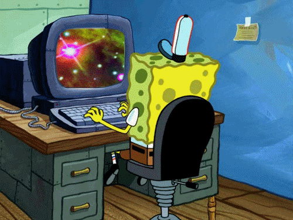

Фритрек и нулевой спринт: Подготовка к работе
</dream>

Это было самое начало пути. На этом этапе важно было проникнуться основами и настроиться на учёбу. И, возможно, подумать, как новые знания могут повлиять на ваше будущее.
Самые счастливые минуты в жизни каждого человека-это когда вы чувствуете,как начинают реализовываться желания благодаря вашему труду.